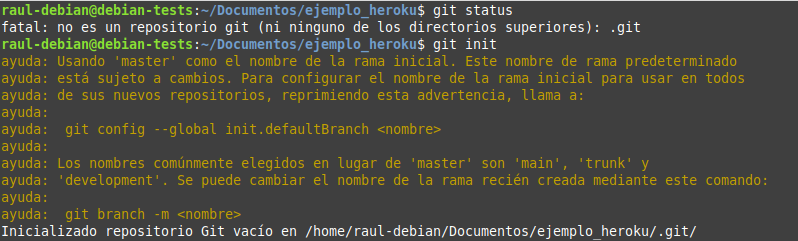
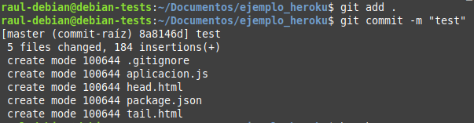
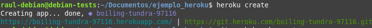
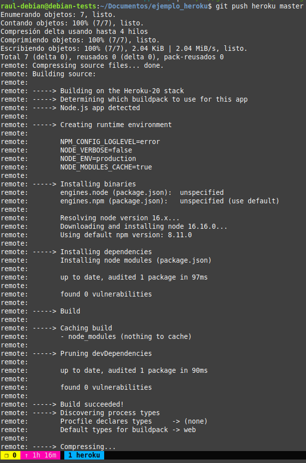
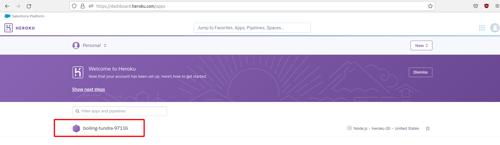
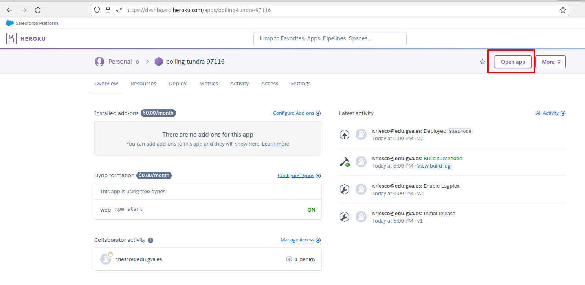
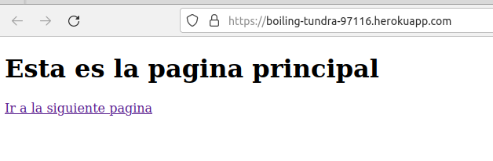

Práctica Voluntaria 1: Despliegue de una aplicación Node.js en Heroku (PaaS)
Atención
De un tiempo a esta parte Heroku se ha convertido en una plataforma de pago. En el momento de escribir esta guía1 ofrece el "Student Developer Program" que proporciona un crédito gratuíto de $13/mes durante 12 meses para aquellos alumnos poseedores de una cuenta "Github Student". Pero incluso bajo estas condiciones exige proporcionar una tarjeta de crédito para validar la cuenta. Este es el motivo de dejar esta práctica como voluntaria y no obligatoria.
Si deseas continuar, empieza por crearte una cuenta GitHub para estudiante (habla con tu centro) y una cuenta en Heroku dentro del GitHub Student Developer Program:
Introducción
En la práctica anterior hemos visto cómo desplegar una aplicación de Node.js sobre un servidor Express en local (en nuestro propio servidor Debian).
La práctica anterior podría asemejarse a las pruebas que realiza un desarrollador antes de pasar su aplicación al entorno de producción.
Ya sabemos que entendemos el despliegue o deployment como el proceso de mover nuestro código típicamente de un sistema de control de versiones a una plataforma de hosting donde se aloja y es servida a los usuarios finales.
A la hora de desplegar la aplicación en producción, podría utilizarse el método de copiar los archivos al servidor concreto vía el vetusto FTP, SSH u otros y desplegarla para dejarla funcionando. No obstante, esta práctica se acerca más a la realidad ya que utilizaremos un repositorio de Github y una plataforma de PaaS (Platform as a Service) como Heroku para desplegar adecuadamente nuestra aplicación en producción.
¿Qué es Github?
A pesar de que trataremos un poco más en profundidad Github en un tema posterior, daremos una breve explicación aquí.
GitHub es un servicio basado en la nube que aloja un sistema de control de versiones (VCS) llamado Git. Éste permite a los desarrolladores colaborar y realizar cambios en proyectos compartidos, a la vez que mantienen un seguimiento detallado de su progreso.

El control de versiones es un sistema que ayuda a rastrear y gestionar los cambios realizados en un archivo o conjunto de archivos. Utilizado principalmente por ingenieros de software para hacer un seguimiento de las modificaciones realizadas en el código fuente, el sistema de control de versiones les permite analizar todos los cambios y revertirlos sin repercusiones si se comete un error.
¿Qué es Heroku?
Heroku es una solución de Plataforma como Servicio (PaaS) basada en la nube para que el cliente solo se preocupe de desarrollar su aplicación mientras Heroku se encarga de la infraestructura que hay detrás.
Para proporcionar este servicio se dispone de unos contenedores virtuales que son los encargados de mantener y ejecutar las aplicaciones. Estos contenedores virtuales son totalmente escalables bajo demanda. Tanto en número como en capacidades.
Una ventaja de elegir Heroku es su capacidad de soportar múltiples lenguajes de programación. Los principales a utilizar son: Node.js, Ruby, Python, Java, PHP, Go, Scala y Clojure. Aunque esta cantidad de lenguajes puede aumentar en el caso de utilizar Heroku Buildpacks, que permiten compilar las aplicaciones en multitud de ellos más.
La desventaja la vimos al principio, , desde el punto de vista educativo, es que de un tiempo a esta parte se ha convertido en una plataforma de pago y exige proporcionar una tarjeta de crédito para validar la cuenta incluso en el Student Developer Program.
Note
Tanto Github, como Heroku, como Netlify pueden ser controlados desde el terminal de nuestro Linux, por lo que seguiremos el procedimiento de contectarnos vía SSH a nuestro Debian y realizar las operaciones por terminal.
Creación de nuestra aplicación para Heroku
Vamos a realizar la práctica utilizando la máquina virtual que creamos en la práctica P3.4 que llamamos "DebianNodejs". También podríamos usar usar la creada en la P3.5 "DebianNodejsCluster" pero nos generará un mayor coste en AWS Academy.
Tras loguearnos por SSH en nuestro Debian, nos crearemos un directorio para albergar la aplicación con el nombre "practicaheroku". En ese directorio, crearemos los 3 archivos (dos .html y un .js)que conformarán nuestra sencilla aplicación de ejemplo:
var http = require('http');
var fs = require('fs'); // para obtener los datos del archivo html
var port = process.env.PORT || 8080; //Para que funcione en Heroku ya que da error 137 con el puerto 3000
http.createServer(function (req, res) {
// Set the default status code and content type for the response
var statusCode = 200;
var contentType = 'text/html';
// req.url stores the path or route of the URL
var url = req.url;
if (url === "/") {
fs.readFile("head.html", function (err, pgres) {
// el primer parámetro es el path al archivo HTML
// y el segundo es el callback de la función
// si el archivo no se encuentra, la función devuelve un error
// si el archivo se encuentra, el contenido del mismo se encuentra en pgres
if (err) {
// If the file is not found, set a 404 status code and content type
statusCode = 404;
contentType = 'text/plain';
pgres = 'HEAD.HTML NOT FOUND';
}
// Set the response headers once and send the response
res.writeHead(statusCode, { 'Content-Type': contentType });
res.end(pgres);
});
} else if (url === "/tailPage") {
fs.readFile("tail.html", function (err, pgres) {
if (err) {
statusCode = 404;
contentType = 'text/plain';
pgres = 'TAIL.HTML NOT FOUND';
}
res.writeHead(statusCode, { 'Content-Type': contentType });
res.end(pgres);
});
} else {
// Handle other routes or URLs as needed
res.writeHead(404, { 'Content-Type': 'text/plain' });
res.end('Page not found');
}
}).listen(port, function () {
console.log("SERVER STARTED PORT: " + port);
});
Ahora, tal y como hacemos siempre a la hora de crear nuestra aplicación Node.js, con el fin de crear el archivo package.json, utilizaremos en el terminal el comando:
Podemos probar que nuestra aplicación funciona perfectamente en local:
Y tras ello, debemos poder acceder, desde nuestra máquina anfitriona a http://IP-maq-virtual:8080
Ya con la aplicación creada y comprobada, podremos desplegarla en múltiples plataformas en la nube, como AWS, GCP, Azure, Digital Ocean, Heroku...
¡Ojo!
Para que nos funcione en Heroku, en el archivo package.json que se nos ha creado al hacer el npm init debemos hacerle una modificación.
En el bloque scripts, debemos borrar lo que haya dentro y dejar únicamente dentro de él:
De forma que Heroku sepa que comando utilizar para iniciar la aplicación tras desplegarla.
Proceso de despliegue en Heroku
Para trabajar con Heroku desde nuestro terminal, debemos instalar el propio CLI de Heroku. Consultando la documentación, vemos que hemos de ejecutar:
Y comprobamos que se ha instalado correctamente consultando su versión:
Lo siguiente será loguearnos en nuestra cuenta de Heroku mediante el terminal, para ello:
Esto en teoría nos abre una pestaña del navegador para loguearnos en nuestra cuenta. Puesto que estamos conectados por SSH a nuestra Debian, no sucederá esto ya que estamos en un terminal sin capacidades gráficas. Lo que haremos será crear un proxy inverso a través de SSH que nos permitirá que las peticiones de páginas web de nuestra máquina local se dirijan al servidor remoto a través del tunel SSH y salgan de nuestro servidor Debian con su IP, como si fuera él quien las hiciera. Para ello haremos lo siguiente.- Cierra la conexión SSH en tu terminal local y lanza una nueva con este comando:
La opción -D establece un servidor SOCKS en el puerto local 443. Como nos vamos a conectar por https usaremos ese puerto.
-
Configura tu navegador web local para usar el servidor SOCKS como proxy. Dependiendo del navegador que estés utilizando, los pasos pueden variar:
-
Firefox:
- Abre Firefox.
- Ve a "Opciones" o "Preferencias" (dependiendo de tu sistema operativo).
- En la barra de búsqueda, escribe "Proxy".
- Haz clic en "Configuración de la red".
- Selecciona "Configuración manual del proxy".
- En "SOCKS Host", ingresa localhost y en "Puerto", ingresa 443.
- Marca la opción "SOCKS v5".
- Haz clic en "Aceptar".
-
Chrome:
- Chrome no admite la configuración directa de un proxy SOCKS desde su interfaz de usuario. Puedes usar una extensión como "Proxy SwitchyOmega" para configurar un proxy SOCKS en Chrome.
-
Con la configuración del proxy establecida en tu navegador, cualquier solicitud de página web que hagas desde tu navegador pasará a través del servidor remoto como si el servidor remoto estuviera haciendo las solicitudes. Esto oculta tu dirección IP local y utiliza la del servidor remoto.
-
Ahora puedes abrir tu navegador y navegar a cualquier página web como lo harías normalmente. El tráfico pasará a través del servidor remoto antes de llegar a su destino. Recuerda que esta configuración solo afectará las solicitudes hechas desde el navegador configurado. Otros programas o aplicaciones en tu equipo local no usarán automáticamente este proxy a menos que se configuren para hacerlo. Para desactivar el proxy, simplemente revierte la configuración en tu navegador web.
Ahora que ya tenemos el navegador preparado, vuelve al terminal con nuestro servidor Debian y ejecuta el comando de login.
$ heroku login
heroku: Press any key to open up the browser to login or q to exit:
Opening browser to https://cli-auth.heroku.com/auth/cli/browser/0f52dd14-45d0-4b9a-b891-565258097f92?requestor=SFMyNTY.g2gDbQAAAAw1NC44MC4yMTAuNTZuBgBoDInGigFiAAFRgA.Q5VcF-T9kPlbI2-EHpkyMlkodGeX2-RKdx1dBEFSlLA
heroku: Waiting for login...
Logging in... done
Logged in as j.munozjimeno@edu.gva.es
Verás que te dice que está abriendo un "browser" para el login. Pero no lo hace. Simplemente copiaremos la URL y la pegaremos en nuestro navegador para loguearnos. Recuerda, tiene que ser el navegador que prepararmos antes. Así, la petición es como si la realizara nuestro server Debian a la web de autenticación de Heroku. Si todo va bien nos permitirá logernos con el usuario previamente creado.
Antes de continuar, conviene asegurarnos de que tenemos la última versión de git en nuestra Debian:
Ahora, dentro del directorio que habíamos creado previamente para nuestra aplicación, se trata de seguir unos sencillos pasos:
Tip
Aquí aparece explicado con lenguaje llano más adelante en el módulo ya hablaremos con mayor propiedad de estas acciones con git
-
Nos aseguramos de que nuestro directorio no es aún un repositorio:
git statusY lo iniciamos:
git init
-
Ahora añadimos todos los archivos presentes en el directorio (
.) para ser enviados al repositorio:git add .Y los preparamos para que sean envidos al repositorio:
git commit -m "Comentario explicativo del commit"
-
Creamos nuestra aplicación en Heroku:
heroku create
Esto creará un git remoto que conectará con nuestro repositorio git local
-
Desplegamos nuestra aplicación en el server de Heroku :
git push heroku masterY comprobamos que la instancia está corriendo:
heroku ps:scale web=1

-
El comando
heroku openabriría nuestra aplicación en el navegador. Sin embargo, por el problema explicado antes de estar conectados por SSH, esto no ocurrirá. No obstante, podemos acceder a nuestra aplicación de otra forma rápida y sencilla desde nuestro dashboard de Heroku:-
Localizamos nuestra aplicación:

-
Y tras hacer click en ella, localizamos el botón que nos permite abrirla y volvemos a hacer click:

-
Comprobando que nuestra aplicación, efectivametne se ha desplegado en Heroku y funciona a la perfección:


-
Referencias
Deploying Node.js applications
List of all limitations in Heroku platform
-
Septiembre 2023 ↩